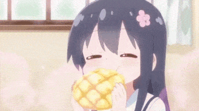
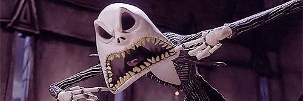
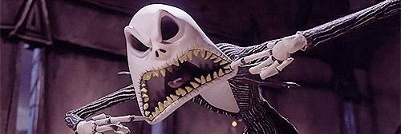
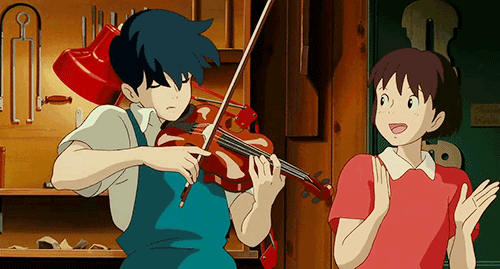
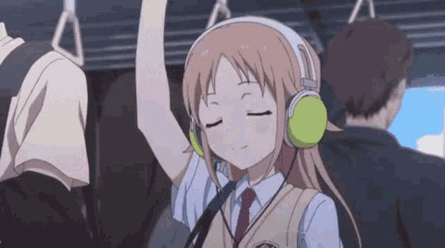
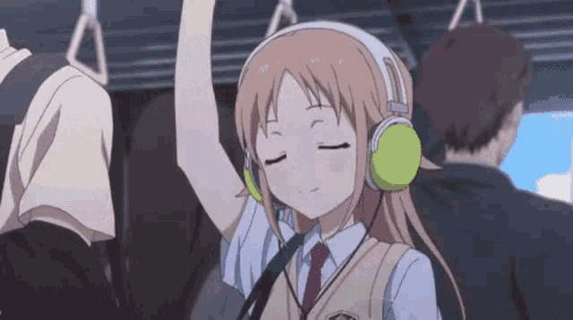
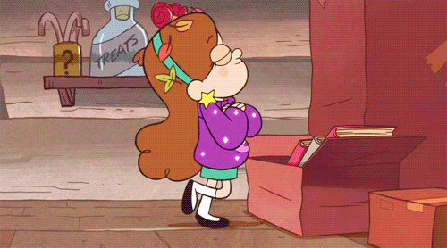
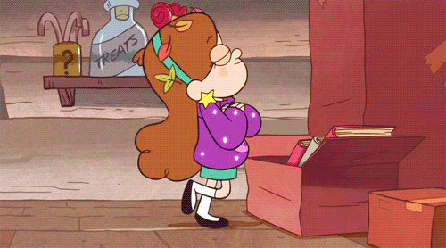
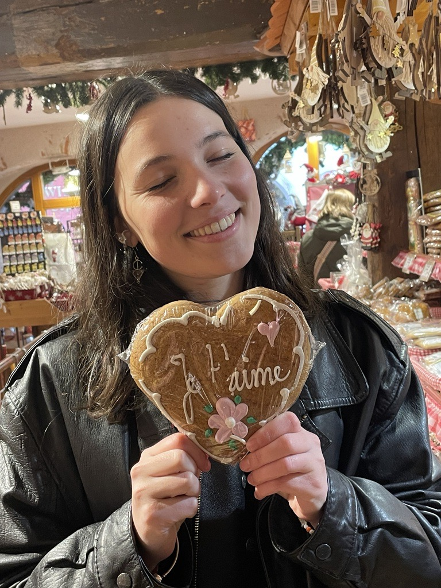

All About Sarah

Prénom : Sarah
Nom : Juice
Date de Naissaince : 13/03/2005
Signe Astro : Poisson
Les choses que Sarah aime : La musique, L'art, La mode, Les films, Les animes/mangas, SNK, Ghibli, Tim burton, L'horreur, Coraline, la nature,les animaux, son frère Yanis (oui j'ai mis yanis après les animaux), Noël, Halloween, l'automne, le printemps, la neige, les paysages marqués par les saisons et le temps, la campagne, les randonnées, ses cousines bien évidemment, Farah, Manon, Mona, Jemila, Sacha, Shaban etc je vais m'arrêter la parce que je vais jamais finir sinon
Groupe Préféré : QUEEN
Crush : Roger Taylor, Ademo, Bishop8, Rihanna.
Péché Mignon : Les Gaufres.
Pour moi Sarah est une des personnes les plus incroyable sur terre.
Saroh c'est la plus forte. En plus d'être une femme ce qui est déjà extrêmment difficile et nul(tu sais le gros misogyne) elle assure la propreté de sa maison depuis son plus jeune âge.C'est une soeur et une enfant incroyable.
Quand son père à besoin d'elle au bar, elle ne refuse jamais alors qu'elle s'occupe aussi de la maison et de ses deux frères bordelique. "c'est la meilleure des grandes soeurs " c'est ce que ma dit son petit frère quand je l'ai interviewvé.
Il ma dit être heureux de l'avoir dans sa vie sinon ça vie serait nul puis il est retourné jouer à fifa. Ma vie aussi serait nul sans Saroh, je veux dire, je vivais très bien avant elle mais depuis qu'elle y est c'est comme si les couleurs étaient encore plus jolies.
En parlant de chose Jolie, Saroh est incroyablement belle. Il faudrait qu'elle prenne plus confiance en elle. Même sur ses outfits, tout ce qu'elle porte lui vas super bien, peu importe le styles cette meuf est incroyable. Elle a des fan mais elle ne le sait pas, après tant mieux parce qu'elle prendrai trop la grosse tête cette gogole.
Je crois que je suis fan d'elle aussi (je dis je crois alors que je crée un blog fan d'elle ptdrrrr). Mais en vrai comment ne pas être fan ?
La meuf joue du saxophone, elle dessine trop bien, elle est comédienne, photographe, créative, trop stylé, DRÔLE ( VOUS AVIEZ DEJA VU UNE FEMME DRÔLE ???) et je vous ai déja dit qu'elle était belle ? et bah je le redis.
Bref il y'a tellement de chose à dire sur elle qu'il faudrait en faire un roman de 2000 pages. Vous avez compris Sarah est incroyable et si vous la connaissez pas encore et bah dans quelques années vous la connaitrez parce que tout le monde la connaitras car ce sera une putain de star et que tout lui réussiras. (J'ai oublié de parler de son combat quotidien contre son estomac mais bon vous avez compris elle est génial ma meilleure copine et elle va vaincre ce truc de merde très bientôt). bon je me suis emmêlé j'ai vraiment écris de manière spontané, jsp comment cela va rendre sur le site mais on s'amuse.

Saroh c'est ça:
.gif) 



Mais Saroh c'est aussi ça:


Et ça:
 


 

Toutes ces personnalité différentes, toutes plus perché les unes que les autres, toutes cette créativité, cette joie de vivre, cette profondeurs, ces outfits de plus en plus incroyable. Tout ça c'est Saroh et c'est pour ça qu'on l'aime cette gogole.
.jpg) J'ai dis que sont péché mignon c'était les gaufres, mais c'est la bouffe en générale
REGARDEZ SONT SOURIRE SVP
J'ai dis que sont péché mignon c'était les gaufres, mais c'est la bouffe en générale
REGARDEZ SONT SOURIRE SVPJE L'AI JAMAIS VU AUSSI CONTENTE QUE DEVANT DE LA GRAILLE BBBBAAAAHAHAHAHAHAHHAHAHAHAA
Bref je vous laisse sur un dernier sourire de Saroh
Sarah

REGARDEZ COMMENT ELLE EST INCROYABLE MA SAROH
PROSTERNEZ VOUS DEVANT ELLE BANDE DE DECHETS QUE VOUS ÊTES
C'est tout ce que j'arrive à faire pour l'instant mdrrr je voulais m'être des étoiles et des exploisions, et des photos de toi partout mais c'est dur de codé un site lol.
mais j'espère que ça t'aura plu saroh.
Crève <3.